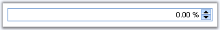

The PercentTextBox is a control that allows you to display only percentage values within the textbox.

Figure 68
Features
· Supports client side validation of key strokes.
· Supports setting minimum and maximum values.
· Uses globalization features of .NET platform to provide locale-specific formatting.
 Creating PercentTextBox
Creating PercentTextBox